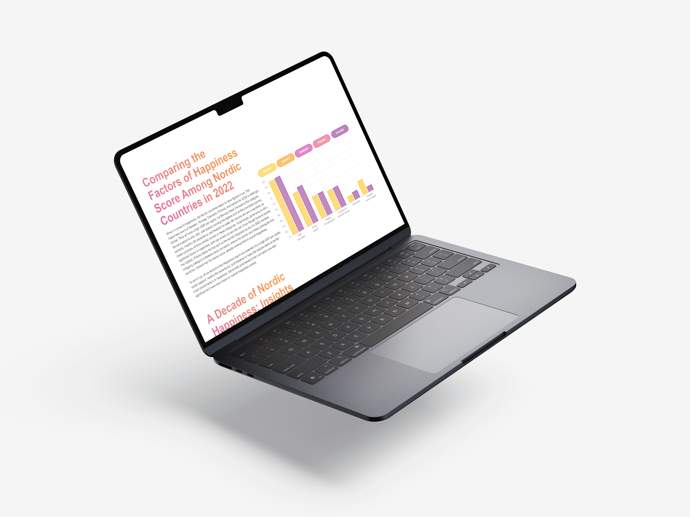

Result

Demo

National University of Singapore (NUS)
The project's objective was to craft a data story using the JavaScript library Chart.js, focusing on the topic of World Happiness. The World Happiness Report of 2022 ranking Finland as the happiest country globally. Notably, the northern European countries, including Sweden, Denmark, Norway, and Iceland, also achieved high scores in the report. The primary aim was to investigate the factors contributing to the happiness scores of these five countries and make a comparative analysis of the very happy Nordic nations.
The Northern european countries consistently rank in the top 10 of the World Happiness Report. However, it is unclear what specific factors contribute to their high levels of happiness and how the score has changed over time. Therefore, the aim of this data stpory is to identify the key drivers of happiness in Northern countries and comparing their happiness scores from 2013-2022.
The initial step in the process involved gathering data on the chosen topic. This data was subsequently refined in Excel, focusing only on the relevant information for the data story. Next, I used Chart.js to create the charts. Finally, I coded the website and worked on the final design using HTML, CSS and Javascript. This is the first website I have built from scratch.